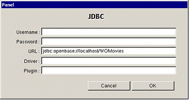
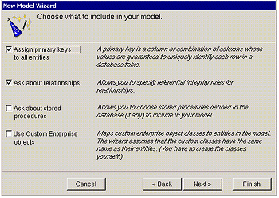
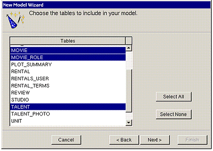
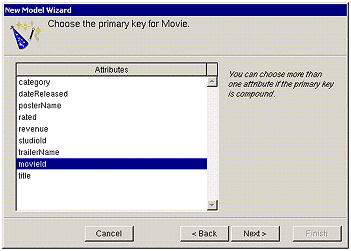
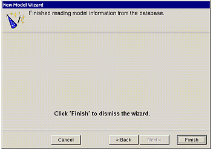

| PATH |

A model associates database columns with instance variables of objects. It also specifies relationships between objects in terms of database join criteria. You create model files using the EOModeler application. The wizard can assist you in creating a model using the schema information from an existing database as a starting point. You can then use EOModeler to modify the model.
The EOModeler application is located in the WebObjects application group.
The wizard's adaptor selection panel appears. An adaptor is a mechanism that connects your application to a database. WebObjecject provides a JDBC adaptor that enables you to access any JDBC-compliant database. Make sure that JDBC is selected in the selection list.

This panel lets you specify connection information to your database. The only information required for the tutorial is the URL. On the URL field type "jdbc:openbase://localhost/WOMovies" without the quotes.
In this next wizard page, you can specify the degree to which the wizard configures your model.

The basic model the wizard creates contains entities, attributes,
and relationships. An entity is the part of
the database-to-object mapping that associates a database table
with an enterprise object class. For example, the Movie entity maps
rows from the MOVIE table to Movie objects. Similarly, an attribute associates
a database column with an instance variable. For example, the title attribute
in the Movie entity maps the TITLE column of the MOVIE table to
the title instance variable
of Movie objects.
A relationship is a link between two
entities that's based on attributes of the entities. For example,
the Movie entity has a relationship to the MovieRole entity based
on the entities' movieId attributes
(although the attributes in this example have the same name in both entities,
they don't have to). This relationship makes it possible to find
all of a Movie's MovieRoles.
How complete the basic model is depends on the completeness of the schema information inside your database server. For example, the wizard includes relationships in your model only if the server's schema information specifies foreign key definitions.
Using the options in this page, you can supplement the basic model with additional information. (Note that the wizard doesn't modify the underlying database.)
Enterprise Objects Framework uses primary keys to uniquely identify enterprise objects and to map them to the appropriate database row. Therefore, you must assign a primary key to each entity you use in your application. The wizard automatically assigns primary keys to the model if it finds primary key information in the database's schema information.
Checking this box causes the wizard to prompt you to choose primary keys that aren't defined in the database's schema information. If your database doesn't define them, the wizard later prompts you to choose primary keys.
If there are foreign key definitions in the database's schema information, the wizard includes the corresponding relationships in the basic model. However, a definition in the schema information doesn't provide enough information for the wizard to set all of a relationship's options. Checking this box causes the wizard to prompt you to provide the additional information it needs to complete the relationship configurations.
Checking this box causes the wizard to read stored procedures from the database's schema information, display them, and allow you to choose which to include in your model. Because the Movies application doesn't require the use of any stored procedures, don't check this box.
An entity maps a table to enterprise objects by storing the name of a database table (MOVIE, for example) and the name of the corresponding enterprise object class (a Java class, Movie, for example). When deciding what class to map a table to, you have two choices: EOGenericRecord or a custom class. EOGenericRecord is a class whose instances store key-value pairs that correspond to an entity's properties and the data associated with each property.
If you don't check the "Use custom enterprise objects" box, the wizard maps all your database tables to EOGenericRecord. If you do check this box, the wizard maps all your database tables to custom classes. The wizard assumes that each entity is to be represented by a custom class with the same name. For example, a table named MOVIE has an entity named Movie, whose corresponding custom class is also named Movie.
Use a custom enterprise object class only when you need to add business logic; otherwise use EOGenericRecord. The Movies application uses EOGenericRecord for the Movie entity and custom classes for the Talent and MovieRole entities. Later on, you'll use EOModeler to specify the custom classes.

The wizard creates entities only for the tables you select. Since the Movies application doesn't interact with any of the other tables (for example, DIRECTOR, PLOT_SUMMARY, STUDIO, and TALENT_PHOTO), you don't need to include them in the model.
Click on Select None. Then select the MOVIE, MOVIE_ROLE, and TALENT tables. You will need to use the Control key to make your selections.
If you are using a database that stores primary key information in its database server's schema information, the wizard skips this step. The wizard has already successfully read primary key information from the schema information and assigned primary keys to your model.
However, if primary key information isn't specified in your database server's schema information (as with Microsoft Access), the wizard now asks you to specify a primary key for each entity.

movieId as
the primary key for the Movie entity.movieId and talentId as
the primary key for the MovieRole entity.MovieRole's primary
key is compound; that is, it's composed of more than one attribute.
Use a compound primary key when any single attribute isn't sufficient
to uniquely identify a row. For MovieRole, the combination of the movieId and talentId attributes
is guaranteed to uniquely identify a row.
talentId as
the primary key for the Talent entity.
Once the wizard is finished gathering schema information, it's ready to create the model.
Navigate to a directory where you want to save the model.
![[image: ../Art/eomnewmodel.gif]](../Art/eomnewmodel.gif)
© 2001 Apple Computer, Inc.